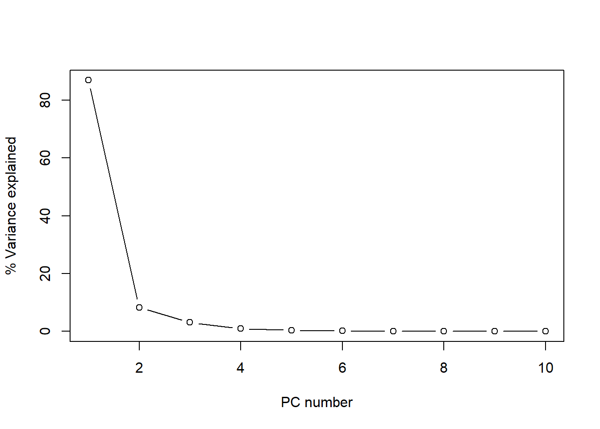
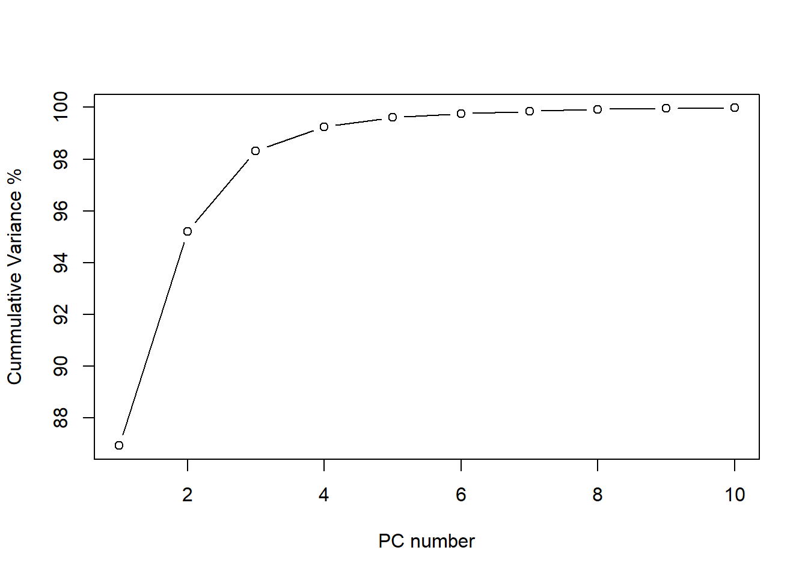
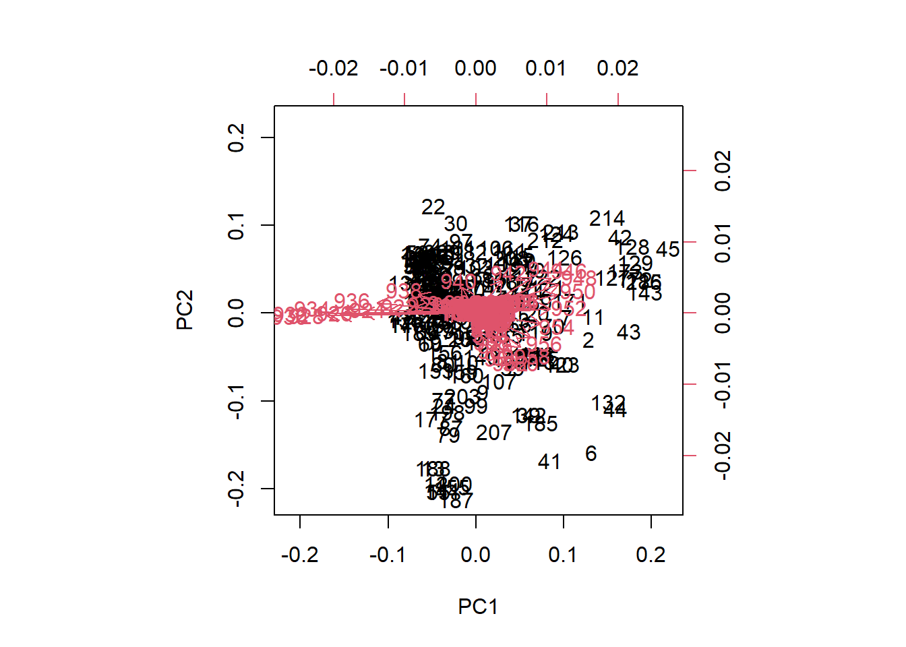
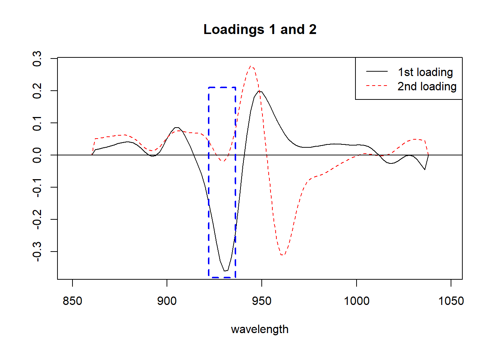
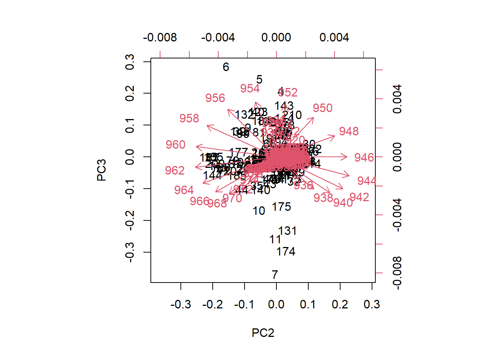
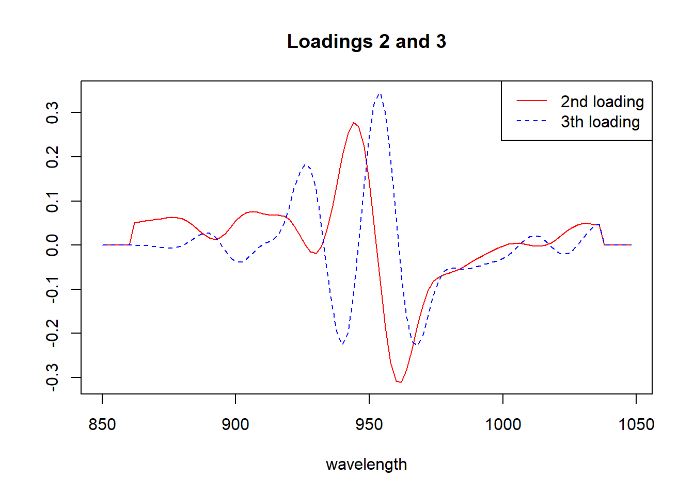
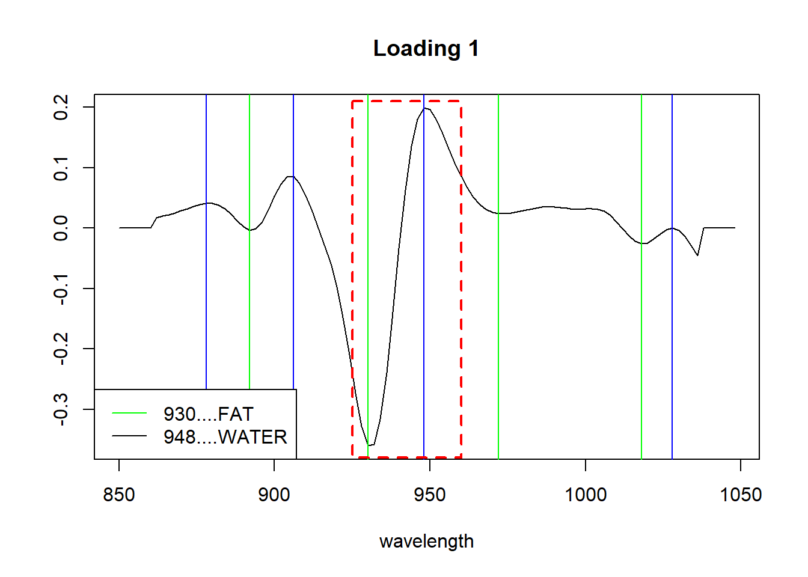
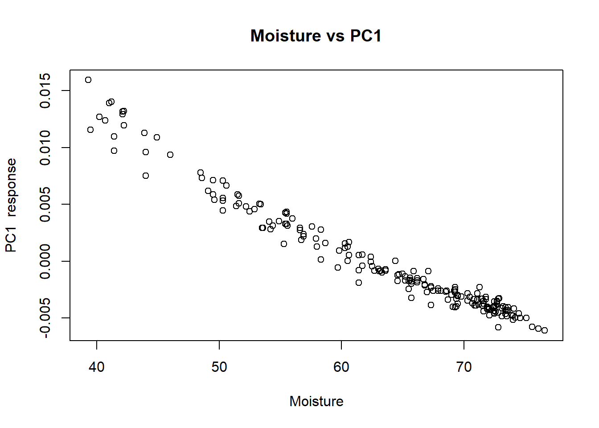
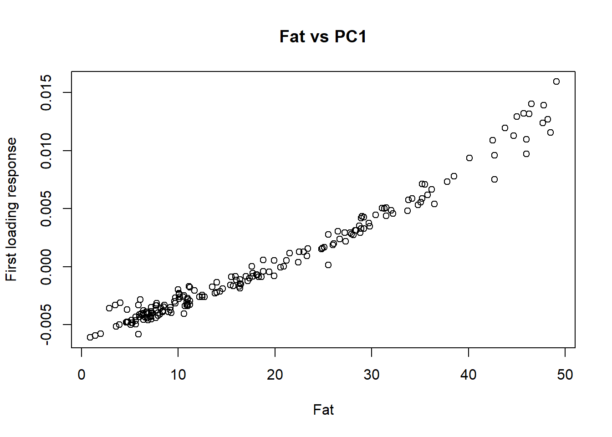
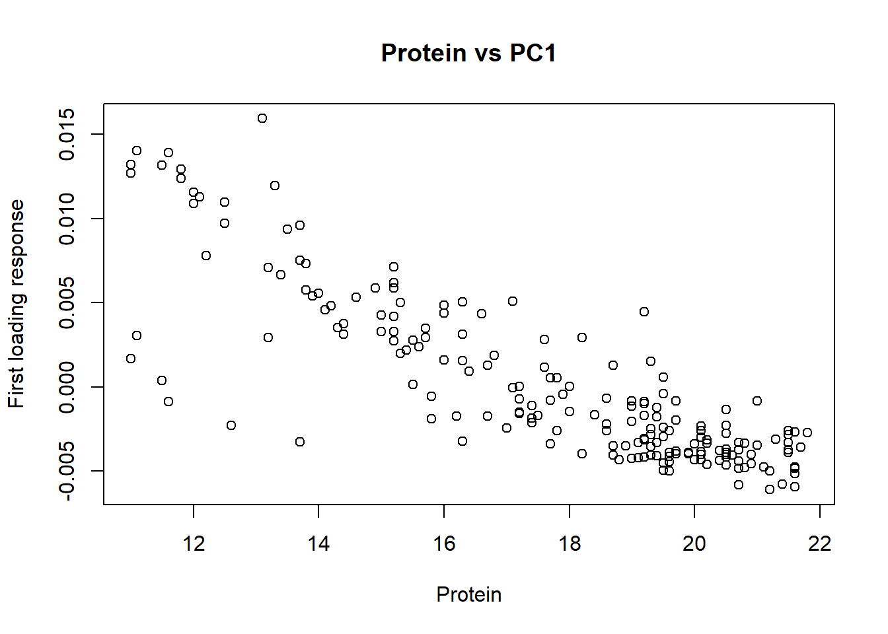

load("C:/BLOG/Workspaces/NIT Tutorial/NIT_ws7.RData")
library(photobiology)Let´s load the workspace and the libraries we are going to use:
Principal Component Analysis
We use the spectra matrix “X” and we want to decompose it into a matrix product:
\[X = TP^{t}+ E\]
where:
X is the spectra matrix (with the math treatment we have choose)
T is a score matrix,
P is the terms matrix and
E is the error matrix.
There are several ways to calculate the PCA with R, but let´s start with “prcomp”. For the calculation we will use the tecator spectra with the SNV+DT2 and the second derivative, that we have seen on part 7.
tecator_pc <- prcomp(tecator$snvdt2der2_spec)
summary(tecator_pc)[[6]][,1:10] PC1 PC2 PC3 PC4
Standard deviation 0.004966548 0.001532207 0.000939981 0.0005106424
Proportion of Variance 0.869350000 0.082740000 0.031140000 0.0091900000
Cumulative Proportion 0.869350000 0.952090000 0.983230000 0.9924200000
PC5 PC6 PC7 PC8
Standard deviation 0.0003223387 0.000200553 0.000164743 0.0001470434
Proportion of Variance 0.0036600000 0.001420000 0.000960000 0.0007600000
Cumulative Proportion 0.9960800000 0.997500000 0.998460000 0.9992200000
PC9 PC10
Standard deviation 0.0001073009 6.183104e-05
Proportion of Variance 0.0004100000 1.300000e-04
Cumulative Proportion 0.9996200000 9.997600e-01In the summary we can see the quantity of variance explained by every term (or principal component). We can calculate the variance in percentage and plot it.
percentVariance <- round(tecator_pc$sdev^2/sum(tecator_pc$sdev^2)*100, 2)Figure 1 shows how the firsts PCs explain almost all the variance, so we can discard the rest and retain only the important ones.
plot(percentVariance[1:10], type = "b", xlab = "PC number", ylab= "% Variance explained")
Figure 1 The plot of the cumulative variance can give us a better idea about the number of principal components to keep:
plot(cumsum(tecator_pc$sdev^2 / sum(tecator_pc$sdev^2)*100)[1:10], type="b", xlab = "PC number", ylab = "Cummulative Variance %")
As we see, after 6 principal components the line becomes flat and almost 100% of the variance is explained (exactly 99.75 %). We see how the first one explain almost 87% of the variance, and the two first terms explain together more than 95% of the variance. For this reason is interesting to look to the plane formed by this two terms and see the scores. We can see this using “biplot”.
biplot(tecator_pc)
Figure 3 We see the samples as a black number in the plane, and the scores are the projection of those samples on the low axis (PC1), and left axis (PC2). The “loadings” are expressed as red arrow, and their projections must be done over the bottom and right axis. As we can see in the biplot of PC1 and PC2, the wavelengths between 922 and 936 have a high negative loading value for PC1, but very low for PC2.
matplot(seq(850, 1048, by = 2), tecator_pc$rotation[ , 1:2], type = "l", ylab = "", xlab = "wavelength", main = "Loadings 1 and 2",
col = c("black", "red"))
abline(h = 0)
rect(xleft = 922, xright = 936, ybottom = -0.38, ytop = 0.21, border = "blue", lty = "dashed", lwd = 2 )
legend("topright", legend = c("1st loading", "2nd loading"), lty = c(1, 2), col = c("black", "red"))
Figure 4 All those arrows in the plane that we call “loadings” (100 values, one for each wavelength), can be seen better as a spectrum where we see peaks and valleys that give details about the importance of every wavelength in the Principal Component. We show the area between 922 and 936 that we have been talking about.
Let´s see now the “biplot” for PC2 and PC3.
biplot(tecator_pc, choices = 2:3)
Figure 5 In the case of the plane formed by PC2 and PC3, we can see how the loadings go in almost all the directions in the plane. We can see also how some samples seems to be apart from the rest.
matplot(seq(850, 1048, by = 2), tecator_pc$rotation[ , 2:3], type = "l", ylab = "", xlab = "wavelength", main = "Loadings 2 and 3", col = c("red", "blue"))
legend("topright", legend = c("2nd loading", "3th loading"), lty = c(1, 2), col = c("red", "blue"))
Looking to the “biplots” and the “loadings” we have a better idea of the importance of every wavelength to the correspondent principal component.
How to find the peaks in the loading spectrum?
We can use the package {photobiology} and the function valleys for the negative peaks and find_peaks for the positive ones, doing this we can study the loadings in more detail and check if they have certain degree of relationship with the outcome variables (parameters).
Let´s have a look to the first loading (peaks and valleys), trying to find out what explain:
matplot(seq(850, 1048, by = 2), tecator_pc$rotation[ , 1], type = "l", ylab = "", xlab = "wavelength", main = "Loading 1", col = "black")
which(find_peaks(tecator_pc$rotation[ ,1]) == TRUE) 854 858 878 906 948 988 1002 1028
3 5 15 29 50 70 77 90 valleys(tecator_pc$rotation[ , 1]) 892 930 972 998 1018 1036
-0.003496019 -0.359915187 0.023924714 0.031066416 -0.026031653 -0.045698228 abline(v = c(878, 906, 948, 1028), col = "blue")
abline(v = c(892, 930, 972, 1018), col = "green")
legend("bottomleft", legend = c("930....FAT", "948....WATER"), lty = 1, col = c("green", "black"))
rect(xleft = 925, xright = 960, ybottom = -0.38, ytop = 0.21, border = "red", lty = "dashed", lwd = 2 )
By the literature we can know where the overtones for certain bonds like C_H, O_H or N-H are. And looking to the first loading, it seems that represents in certain way, the fat and moisture parameter. We just have to correlate the loadigs values for the first PC with the three parameters and see the high correlation with fat and moisture.
cor(tecator$Moisture, tecator_pc$x[ , 1])[1] -0.9777829cor(tecator$Fat, tecator_pc$x[ , 1])[1] 0.9823003cor(tecator$Protein, tecator_pc$x[ , 1])[1] -0.829764As we have seen in previous posts fat and protein are inverse correlated, and that is the reason we have a negative high correlation for the protein with this first loading.
We can see the XY plots for the reference values vs. the first loading values.
plot(tecator$Moisture, tecator_pc$x[ , 1], xlab = "Moisture", ylab = "PC1 response", main = "Moisture vs PC1")
plot(tecator$Fat, tecator_pc$x[ , 1], xlab = "Fat", ylab = "First loading response", main = "Fat vs PC1")
plot(tecator$Protein, tecator_pc$x[ , 1], xlab = "Protein", ylab = "First loading response", main = "Protein vs PC1")
As we study more loadings we still see the bands which correspond to fat, water or protein, but the correlation with the reference values is less, but this is normal due that the highest extraction was taken by the first principal component and we are extracting from the remaining new variability that we want to interpret.
As we see, there is certain correlation between the PC loadings and the parameters, so we can develop a regression called “principal components regression” to predict the values of new samples. So this is something we can do in coming posts.
save.image("C:/BLOG/Workspaces/NIT Tutorial/NIT_ws8.RData")